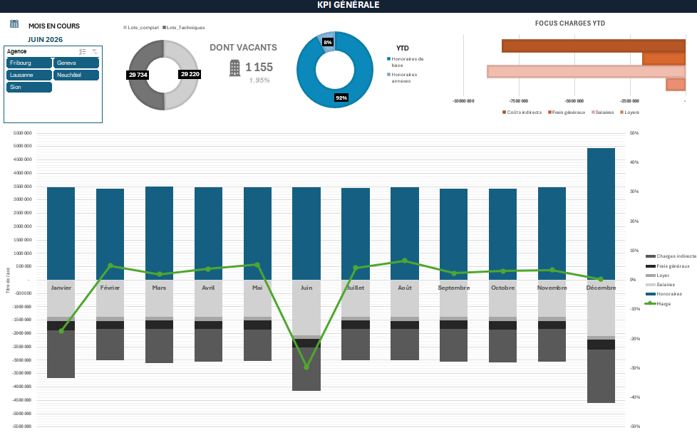

Étude de cas — 01
Tableau de bord régie immobilière
Suivi d'activité multi-agences — Suisse romande

Pilotage de 5 agences fictives (Genève, Lausanne, Fribourg, Neuchâtel, Sion) : nombre d'objets en gestion, taux de vacance, effectifs, charges d'exploitation et refacturation des charges indirectes du siège vers chaque agence.
5 agences · ~58 000 lots gérés · ~43 M de CA · 12 mois de données — données fictives
Structure du projet
- Synthèse
- Vision globale de l'activité, de la rentabilité, du portefeuille et des principaux indicateurs de performance.
- Performances financières
- Analyse du chiffre d'affaires, du budget, des charges, de l'EBITDA et de la formation du résultat.
Le projet présenté a volontairement été simplifié afin d'en faciliter la compréhension et de mettre en évidence les principaux axes d'analyse. Dans un contexte opérationnel, les possibilités d'analyse sont naturellement plus larges et peuvent être adaptées aux besoins de pilotage et aux problématiques identifiées. Les données peuvent notamment être analysées selon différents niveaux de granularité : par portefeuille, par client, par immeuble, par objet, par typologie ou encore par période. Ces différents axes permettent de croiser les informations, d'identifier plus finement les écarts et les tendances, de comparer les performances et de faire ressortir les principaux leviers d'amélioration.